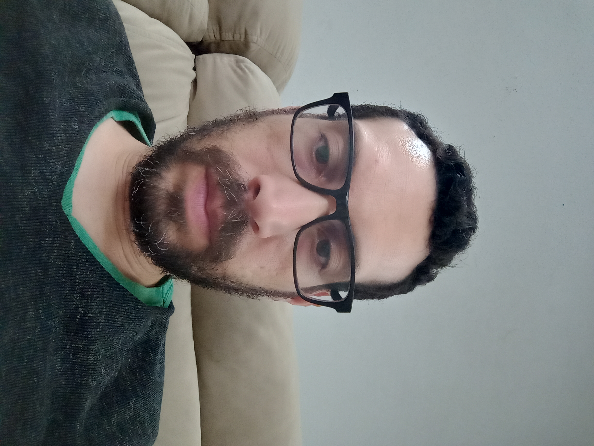

Gustavo Cristiano Azevedo dos Santos | WDD 130

Olá, meu nome é Gustavo Cristiano Azevedo dos Santos, tenho 39 anos e sou estudante de Desenvolvimento Web na Universidade de BYU. Sou apaixonado por tecnologia e programação, e estou sempre em busca de aprender novas habilidades e aprimorar meus conhecimentos na área. Além disso, gosto de desafios e estou sempre disposto a enfrentar novos projetos e oportunidades que me permitam crescer profissionalmente.